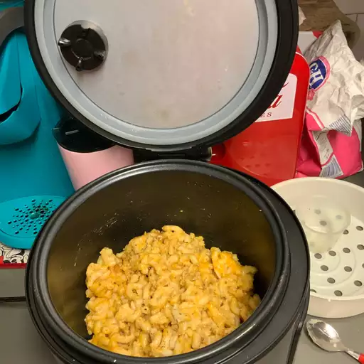

Photo by Steven Smith on Allrecipes.com
I've made this extra cheesy mac and cheese several times in the rice cooker and it always comes out delicious! If you like your mac and cheese nice and crusty, leave the cooker on warm for another 10 to 15 minutes after stirring the cheeses into the cooked macaroni.
I make this in my small Aroma 2- to 8-cup rice cooker. If you have a larger unit, you may easily double or triple this recipe.
Elbow macaroni works best in this recipe, but you can use rotini, penne, shells, or whatever smaller pasta you have on hand.
Feel free to experiment with different types of cheese — sharp, medium, Italian blend, or whatever you like!
I used low-sodium chicken broth, but any kind would be good. Any type of milk can be used in place of almond milk.
Red pepper flakes can be used in place of paprika.